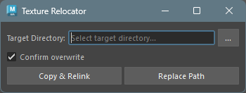

Texture Relocator
Overview
A tool to batch modify texture file paths linked to all file nodes in the scene.
Main features:
- Copy & Relink: Copy texture files to a specified directory and update file node paths
- Replace Path: Replace file node paths with a specified directory (without copying files)
Supports UDIM textures (<UDIM>)
and image sequences (<F>).
How to Launch
Launch from the dedicated menu or using the following command:
import faketools.tools.model.texture_relocator.ui
faketools.tools.model.texture_relocator.ui.show_ui()
Usage
Copy & Relink
Copies texture files to another directory and updates file node paths in the scene to the new location.
Specify the destination directory in Target Directory.
- Click the
...button to browse for a directory. - If the specified directory does not exist, you will be prompted to create it.
- Click the
Set the Confirm overwrite option as needed.
- On: Shows a confirmation dialog when files with the same name exist at the destination
- Off: Overwrites without confirmation
Click the Copy & Relink button.
All texture files in the scene will be copied to the specified directory, and the file node paths will be updated.
Replace Path
Changes only the file node paths without copying texture files. Use this when texture files with the same names already exist in the target directory.
Specify the directory containing the texture files in Target Directory.
Click the Replace Path button.
All file node paths in the scene will be updated to reference the specified directory.
Options
| Option | Description |
|---|---|
| Target Directory | Directory path for copying or linking textures |
| Confirm overwrite | When enabled, shows a confirmation dialog if files with the same name exist at the destination |
About UDIM and Image Sequences
This tool supports UDIM textures and image sequences.
- UDIM: Textures with patterns like
texture.<UDIM>.png(multiple files: 1001, 1002, …) - Sequences: Textures with patterns
like
texture.<F>.png(frame-numbered sequential files)
All related files for these textures are automatically processed.
Notes
- This tool targets all file nodes in the scene. There is no functionality to target specific nodes only.
- The Replace Path feature assumes that files with the same names exist in the specified directory. If they don’t exist, textures may not load correctly.
- All operations are undoable.